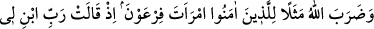
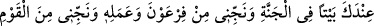
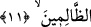

kelimesinin mâzî/di-li geçmiş zaman kipiyle ifâde edilmesinin sebebi kendilerine
yapılacak olan bu hitâbın kesinliğinden dolayıdır. Bu hitâbı onlara azâb etmekle
yükümlü olan melekler diyeceklerdir. Bu cehenneme giren kâfirlerle kendilerinin
dostları arasında hiç bir ilişki olmayacaktır. Âyet metninde “dâhilîn” şeklinde
cehenneme girenlerin çoğul ve erkek kipiyle ifâde edilmesinin sebebi bu iki kadının
cehenneme yalnız girmeyeceklerinden dolayıdır. Sonra dilbilgisi kuralına göre
müenneslerle müzekkerler bir arada bulunduklarında erkeklere âid kipe ağırlık verilir
ve erkek siğasıyla ifâde olunur.
Bu âyet-i kerîme günah işleyip de başkasının sâlih olmasından yararlanacağını uman
kimsenin bu ümidini boşa çıkarmaktadır. Bu ümidi besleyen kişi o sâlih olan kimsenin
gittiği yola ve gidiş tarzına uygun hareket etmiyorsa, aralarında neseb veya evlilik bağı
gibi kaynaştırıcı bir bağ olsa bile yine de o kimsenin sâlihliğinden yararlanamaz.
Kàşânî demiştir ki: Tabiî; yâni doğal bağ ile sûrî; yâni şeklî bağlar uhrevî
meselelerde îtibâr edilen şeyler değildir. Tam tersine bu hususta tesirli olan sadece
hakîkî muhabbet ve rûhânî birliktir. Tabiî bir bağa göre kaynaşma ve birlikte yaşamaya
göre şekil alan sûrî; yâni şeklî bağın öldükten sonra hiçbir tesîri yoktur. Zîrâ kıyâmet
günü insanlar arasında “akrabalık bağları kalmamıştır.” (el-Mü’minûn, 23/101) İşte
bâtınî bağlar da bununla mukayese edilebilir. Bütün iyi ve kötü güçlerin tamamı her ne
kadar ruh ve cesed ikilisinden doğmuşlar ise de kötü olanları -Nûh’un oğlu gibi-
gerçekte ruh ehlinden değildir. O halde saîd ve şakî olan insanlar her iki dünyâda da
birbirlerinden ayrıdırlar.
İyilik ve takvânın rindlikle ne münâsebeti var?
Vaaz dinleme nerde? Nerde rebâb nağmesi?
11. Allah, inananlara da Firavun’un karısını misâl gösterdi. O: Rabbim! Bana
katında, cennette bir ev yap; beni Firavun’dan ve onun (kötü) işinden koru ve beni
zâlimler topluluğundan kurtar! demişti.
“Allah, inananlara da Firavun’un karısını misâl gösterdi.” Yâni Allah inananlara
Firavun’un karısının durumunu inkâr bağının onlara zarar vermeyeceğini misâl olarak
gösterdi. Çünkü Firavun’un karısı dünyâda Allah’ın düşmanlarının tasarrufunda iken
cennette, cennet odalarının en yücelerindedir. Firavun’un karısından maksad Âsiye binti
Müzâhim ismindeki hanımdır. Arapça’da “raculun âsî ve imraatun âsiye” denilir ki